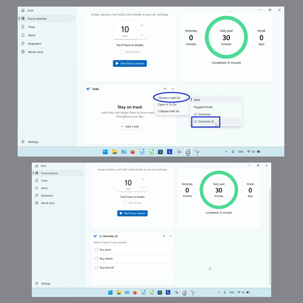

How to Navigate the Focus Sessions Task List in Microsoft Windows Clock (Windows 11)
This tutorial covers:
How to Open a Task in the Microsoft “To Do” App:
How to Switch the Task List
How to Collapse the Task List
How to Expand the Task List
No time to scroll down? Click through this presentation tutorial:
Follow along with a tutorial video:
How to Open a Task in "To Do" With Right Click
- Step 1: First add a task. Right click the task.

- Step 2: In the menu that opens, click “Open in To Do”.

How to Open a Task in "To Do" With Menu
Step 1: Add a task. Click the “See more” or “…” button.
- Step 2: In the menu that opens, click “Open in To Do”.
How to Switch the Task List
- Step 1: First switch to Focus Sessions mode. In the “Task” section, click the “See more” or “…” button.
- Step 2: In the menu that opens, hover over “Choose a task list”. In the second menu that opens, click to select a task list. 
How to Collapse the Task List
- Step 1: Switch to Focus Sessions mode. Click the “See more” or “…” button.
- Step 2: In the menu that opens, click “Collapse task list”.

How to Expand the Task List
- Step 1: First collapse the task list. Click the “See more” or “…” button.
- Step 2: In the menu that opens, click “Expand task list”.
Save a copy of these instructions for later with this free PDF tutorial.